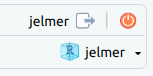
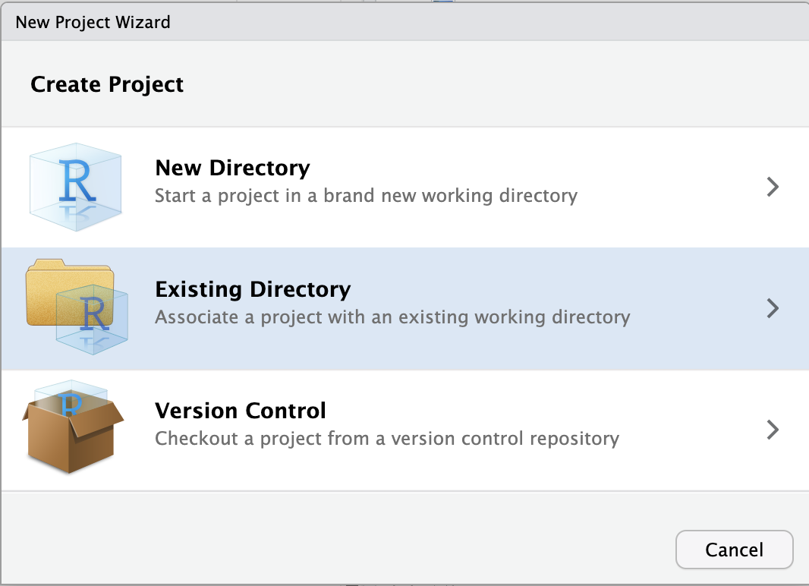
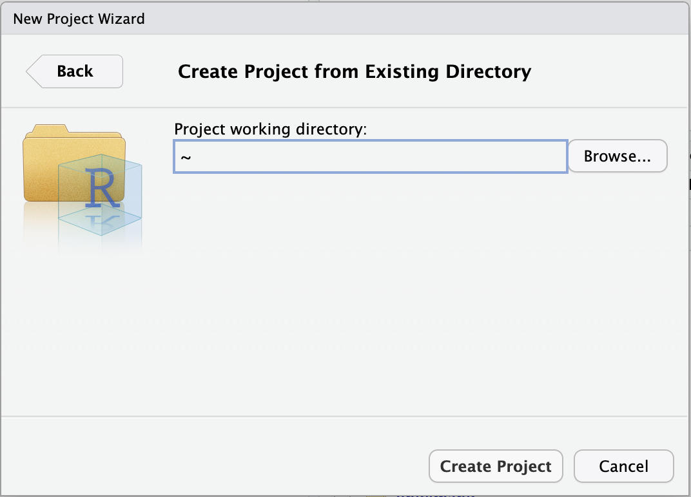
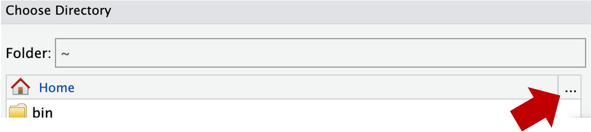
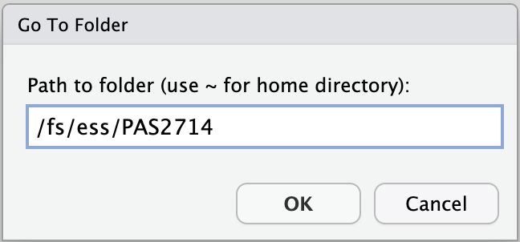
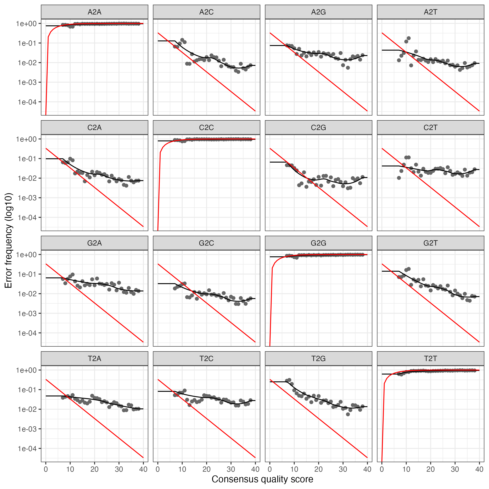
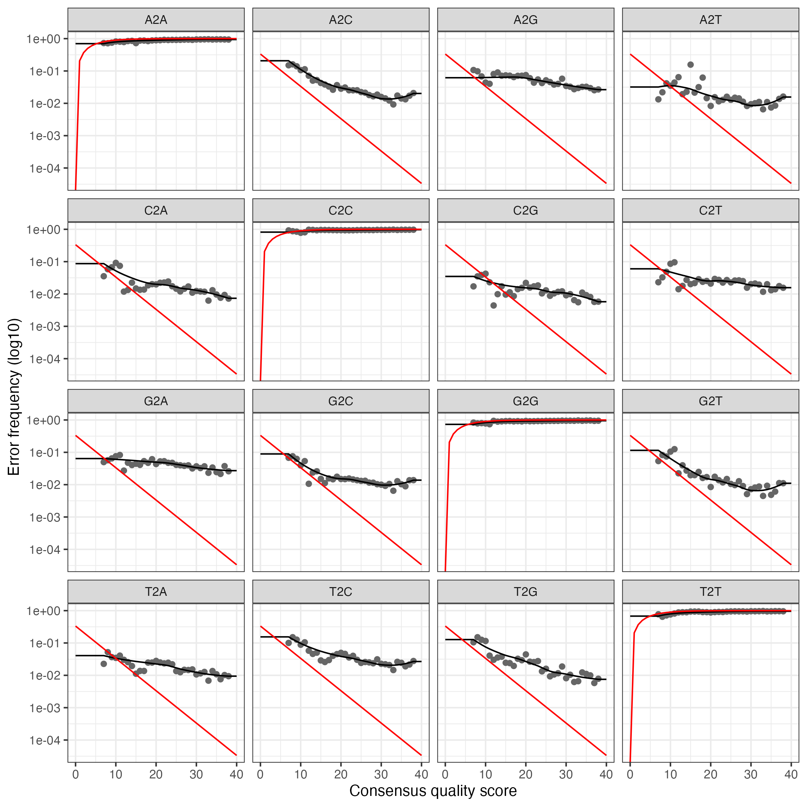

# Set the R library location
.libPaths("/fs/ess/PAS0471/jelmer/R/metabar")
dyn.load("/fs/ess/PAS0471/jelmer/software/GLPK/lib/libglpk.so.40", local = FALSE)Calling ASVs with the DADA2 pipeline
1 Setting up
Start an RStudio Server job at OSC
- Log in to OSC at https://ondemand.osc.edu.
- Click on
Interactive Apps(top bar) and thenRStudio Server(all the way at the bottom). - Fill out the form as follows:
- Cluster:
Pitzer - R version:
4.3.0 - Project:
PAS2714 - Number of hours:
4 - Node type:
any - Number of cores:
4
- Cluster:
- Click
Launchand once your job has started, clickConnect to RStudio Server.
Open your RStudio Project
- Your RStudio Project in
/fs/ess/PAS2714may have automatically opened. You can see whether a Project is open, and if so, which one, in the top-right of your screen (left screenshot below) - If your Project isn’t open, click on the R-in-a-box icon to open it (right screenshot below):

jelmer is open.Your Project name is also your username.

Don’t have an RStudio Project yet? Click here to create one.
- Click
File(top bar, below your browser’s address bar) >New Project - In the popup window, click
Existing Directory.
Click to see a screenshot

- Click
Browse...to select your personal dir.
Click to see a screenshot

- In the next window, you should be in your Home directory (abbreviated as
~), from which you can’t click your way to/fs/ess! Instead, you’ll first have to click on the (very small!)...highlighted in the screenshot below:

- Type at least part of the path to your personal dir in
/fs/ess/PAS2714/users, e.g. like shown below, and clickOK:

- Now you should be able to browse/click the rest of the way to your personal directory, something like
/fs/ess/PAS2714/users/jelmer. - Click
Chooseto pick your selected directory. - Click
Create Project.
RStudio should reload and you should now have your new Project “open”.
Create a new script
Click File > New file > R script, and immediately save the new file (File > Save as) as dada.R inside your scripts directory1.
We recommend that you copy-and-paste (or type, if you prefer) code from this webpage into your script and then execute the code. That way, you’ll have a nice record of what you did, exactly.
Load R packages
To save time, we have already installed all the necessary R packages at OSC into a custom library. To add this library for the current R session:
Then load the packages:
# Load the packages
library(dada2)
library(phyloseq)
library(tidyverse)# (You should get a number of package startup messages - not shown)- dada2 - Functions to assemble amplicon sequence varients (ASVS), with single nucleotide resolution, including filtering, dereplication, ASV inference, merging of paired (FWD and REV) and construction of a sequence table and a taxonomy table.
- phyloseq - A package for organizing, analyzing and visualizing microbial community analysis.
- tidyverse - A package for speeding up, organizing, streamlining and visualizing data science.
2 Preparing to run the workflow
Set the number of cores
Most dada2 functions can use multiple cores. Because we are on a cluster and we have reserved only part of a node, auto-detection of the number of cores will not be appropriate (the program will detect more cores than we have available). Therefore, we should specify the appropriate number of cores in our function calls below.
We will set the number of cores here, assuming you requested 4 cores in your job submission (change if needed):
# Set the number of cores
n_cores <- 4Set file paths
Setting file paths in the beginning to make things easier to change or troubleshoot in the future.
Input files:
# Define the input files
# Dir with input FASTQ files (post-cutadapt trimmed reads):
indir <- "results/cutadapt"
# FASTA file with training data - a database your sequences will be compared to (SILVA, UNITE, etc):
# (Check for an up-to-date version at <https://benjjneb.github.io/dada2/training.html>)
tax_key <- "data/ref/silva_nr99_v138.1_train_set.fa.gz"
# File with sample metadata (data about your samples, treatments, blocking, etc):
metadata_file <- "data/meta/meta.tsv"
Don’t have the input files? Click here to copy them.
Next to the Console in R, click the Terminal to access a Unix shell. In the Terminal, run the following cp commands to copy the necessary data.
If you’re missing the
cutadaptresults because you didn’t manage to run this in the previous session:cp -rv /fs/ess/PAS2714/share/results2/cutadapt /fs/ess/PAS2714/users/$USER/resultsYou really should have the
dataand (other)resultsalready, but if not:cp -rv /fs/ess/PAS2714/share/data /fs/ess/PAS2714/users/$USER cp -rv /fs/ess/PAS2714/share/results /fs/ess/PAS2714/users/$USER
Output files:
# Define the output dirs
outdir <- "results/dada" # Most output
filter_dir <- "results/dada/filtered_fastq" # Filtered FASTQ files
# Create directories if they are not already created:
dir.create(outdir, showWarnings = FALSE, recursive = TRUE)
dir.create(filter_dir, showWarnings = FALSE, recursive = TRUE)Assign forward and reverse reads
We will assign the FASTQ files that we processed with cutadapt to two vectors: one with files with forward reads, and one with files with reverse reads. These files can be distinguished by having “R1” (forward) and “R2” (reverse) in their names.
# Create vectors with FASTQ file names
fastqs_raw_F <- sort(list.files(indir, pattern = "_R1.fastq.gz", full.names = TRUE))
fastqs_raw_R <- sort(list.files(indir, pattern = "_R2.fastq.gz", full.names = TRUE))
head(fastqs_raw_F)[1] "results/cutadapt/NW102AB_R1.fastq.gz"
[2] "results/cutadapt/NW102C_R1.fastq.gz"
[3] "results/cutadapt/NW103AB_R1.fastq.gz"
[4] "results/cutadapt/NW103C_R1.fastq.gz"
[5] "results/cutadapt/NW201AB_R1.fastq.gz"
[6] "results/cutadapt/NW201C_R1.fastq.gz" Check sample IDs
We’ll get the sample IDs from the FASTA file names and from a file with metadata, and will check if they are the same. First we’ll prepare the metadata:
# Read and prepare the metadata
metadata_df <- read.table(file = metadata_file, sep = "\t", header = TRUE)
colnames(metadata_df)[1] <- "SampleID"
rownames(metadata_df) <- metadata_df$SampleID
head(metadata_df) SampleID Location Rotation Plot Block
NW102AB NW102AB NWARS CS 102AB 100
NW102C NW102C NWARS CS 102C 100
NW103AB NW103AB NWARS CSW 103AB 100
NW103C NW103C NWARS CSW 103C 100
NW201AB NW201AB NWARS CSW 201AB 200
NW201C NW201C NWARS CSW 201C 200Let’s compare the sample IDs from the metadata with the FASTQ filenames:
# Check the sample IDs in the metadata
metadata_df$SampleID [1] "NW102AB" "NW102C" "NW103AB" "NW103C" "NW201AB" "NW201C" "NW203A"
[8] "NW203BC" "NW304A" "NW304BC" "NW305AB" "NW305C" "NW403A" "NW403BC"
[15] "NW404A" "NW404BC" "W101AB" "W101C" "W103AB" "W103C" "W204A"
[22] "W204BC" "W205A" "W205BC" "W303AB" "W303C" "W304AB" "W304C"
[29] "W403AB" "W403C" "W404A" "W404BC" # Check the FASTA file names
# (Note, basename() strips the dir name from the filename)
head(basename(fastqs_raw_F))[1] "NW102AB_R1.fastq.gz" "NW102C_R1.fastq.gz" "NW103AB_R1.fastq.gz"
[4] "NW103C_R1.fastq.gz" "NW201AB_R1.fastq.gz" "NW201C_R1.fastq.gz" To extract the sample IDs from the FASTQ file names, we remove everything after _R from the file names using the sub() function:
# Extract the sample IDs from the FASTQ file names
# sub() arguments: sub(pattern, replacement, vector)
sampleIDs <- sub("_R.*", "", basename(fastqs_raw_F))
head(sampleIDs)[1] "NW102AB" "NW102C" "NW103AB" "NW103C" "NW201AB" "NW201C" We can check whether the IDs from the FASTQ files and the metadata data frame are the same:
# Check whether the sample IDs match
identical(sort(metadata_df$SampleID), sampleIDs)[1] TRUE
The above code should have returned
TRUE but if it returned FALSE, we should:
Check whether any samples are missing from the FASTQ files:
setdiff(sort(metadata_df$SampleID), sampleIDs)character(0)Check whether any samples are missing from the metadata:
setdiff(sampleIDs, sort(metadata_df$SampleID))character(0)
3 Filtering and quality trimming
We will now perform quality filtering (removing poor-quality reads) and trimming (removing poor-quality bases) on the FASTQ files using DADA2’s filterAndTrim() function.
The filterAndTrim() function will write the filtered and trimmed reads to new FASTQ files. Therefore, we first define the file names for the new files:
# Define the paths to the filtered (output) FASTQ files
# (filter_dir directory set and created in the "set file paths" step,
# still have seperate names for FWD and RVS reads at this point.)
fastqs_filt_F <- file.path(filter_dir, paste0(sampleIDs, "_F_filt.fastq"))
fastqs_filt_R <- file.path(filter_dir, paste0(sampleIDs, "_R_filt.fastq"))We will use the following arguments of the filterAndTrim() function:
truncLen- Truncate reads aftertruncLenbases and discard reads shorter than this. Could be adjusted depending on the primers that are used. Also could be left out in the case of a more variable sequence (Ex: ITS). The trimming length can be different for forward and reverse reads, which is good because reverse reads are often of worse quality.It is also suggested to trim the first 10 nucleotides of each read (
trimLeftargument), since these positions are likely to contain errors.maxEEis an important argument that will let DADA2 trim reads based on the maximum numbers of Expected Errors (EE) given the quality scores of the reads’ bases.trunQ- trim read after an instance of a quality score less than or equal to this number
# Filter the FASTQ files
filter_results <-
filterAndTrim(fastqs_raw_F, fastqs_filt_F,
fastqs_raw_R, fastqs_filt_R,
truncLen = c(250,210),
trimLeft = 10,
maxN = 0,
maxEE = c(2,2),
truncQ = 2,
rm.phix = FALSE,
multithread = n_cores,
compress = FALSE, verbose = TRUE)
head(filter_results) reads.in reads.out
NW102AB_R1.fastq.gz 12507 8681
NW102C_R1.fastq.gz 14178 9657
NW103AB_R1.fastq.gz 11814 7569
NW103C_R1.fastq.gz 14704 10221
NW201AB_R1.fastq.gz 12031 8125
NW201C_R1.fastq.gz 12223 81884 Dereplication and error training
Next, we want to “dereplicate” the filtered FASTQ files. During dereplication, we condense the data by collapsing together all reads that encode the same sequence, which significantly reduces later computation times.
# Dereplicate the FASTQ files
fastqs_derep_F <- derepFastq(fastqs_filt_F, verbose = FALSE)
fastqs_derep_R <- derepFastq(fastqs_filt_R, verbose = FALSE)
names(fastqs_derep_F) <- sampleIDs
names(fastqs_derep_R) <- sampleIDsThe DADA2 algorithm makes use of a parametric error model (err) and every amplicon dataset has a different set of error rates. The learnErrors method learns this error model from the data, by alternating estimation of the error rates and inference of sample composition until they converge on a jointly consistent solution.
This is a computationally intensive step and is one of the most time consuming steps of the dada pipeline in my experience (depending on size of dataset could be up to 24 hours or more). The multithread argument here speeds along the process. (If your dataset is very large consider using a “hugemem” node at OSC for this step.)
# Error training
err_F <- learnErrors(fastqs_derep_F, multithread = n_cores, verbose = TRUE)
err_R <- learnErrors(fastqs_derep_R, multithread = n_cores, verbose = TRUE)71510640 total bases in 297961 reads from 32 samples will be used for learning the error rates.
Initializing error rates to maximum possible estimate.
selfConsist step 1 ................................
selfConsist step 2
selfConsist step 3
selfConsist step 4
selfConsist step 5
selfConsist step 6
Convergence after 6 rounds.
59592200 total bases in 297961 reads from 32 samples will be used for learning the error rates.
Initializing error rates to maximum possible estimate.
selfConsist step 1 ................................
selfConsist step 2
selfConsist step 3
selfConsist step 4
selfConsist step 5
selfConsist step 6
selfConsist step 7
Convergence after 7 rounds.We’ll plot errors to verify that error rates have been reasonable well-estimated. Pay attention to the fit between observed error rates (points) and fitted error rates (lines):
# Plot the error profiles
plotErrors(err_F, nominalQ = TRUE)
plotErrors(err_R, nominalQ = TRUE)Click to see the expected plots
For the forward reads:

For the reverse reads:
These plot show error rates from the transition between all base pair transitions:
- Black points are observed error rates.
- The black line is estimated error rates using machine learning.
- The red line shows expected error rates under the nominal definition of the quality score.
Looking for the estimated rate to fit most of the observed points and that error rates drop with increased quality scores.
5 Infer ASVs
We will now run the core dada algorithm, which infers Amplicon Sequence Variants (ASVs) from the sequences.
This step is quite computationally intensive, and for this tutorial, we will therefore perform independent inference for each sample (pool = FALSE), which will keep the computation time down. In my experience, this step could take several hours with large datasets.
Pooling will increase computation time, especially if you have many samples, but will improve detection of rare variants seen once or twice in an individual sample, but many times across all samples. Therefore, for your own analysis, you will likely want to use pooling, though “pseudo-pooling” is also an option.
# Infer ASVs
dada_Fs <- dada(fastqs_derep_F, err = err_F, pool = FALSE, multithread = n_cores)
dada_Rs <- dada(fastqs_derep_R, err = err_R, pool = FALSE, multithread = n_cores)Sample 1 - 8681 reads in 5956 unique sequences.
Sample 2 - 9657 reads in 5718 unique sequences.
Sample 3 - 7569 reads in 5594 unique sequences.
Sample 4 - 10221 reads in 7071 unique sequences.
Sample 5 - 8125 reads in 4975 unique sequences.
Sample 6 - 8188 reads in 5951 unique sequences.
# [...output truncated...]Let’s inspect one of the resulting objects:
dada_Fs[[1]]dada-class: object describing DADA2 denoising results
343 sequence variants were inferred from 5956 input unique sequences.
Key parameters: OMEGA_A = 1e-40, OMEGA_C = 1e-40, BAND_SIZE = 166 Merge read pairs
In this step, we will first merge the forward and reverse read pairs: the fragment that we amplified with our primers was short enough to generate lots of overlap among the sequences from the two directions.
# Merge forward and reverse reads
mergers <- mergePairs(dada_Fs, fastqs_derep_F,
dada_Rs, fastqs_derep_R,
verbose = TRUE)5463 paired-reads (in 253 unique pairings) successfully merged out of 6865 (in 531 pairings) input.
6421 paired-reads (in 325 unique pairings) successfully merged out of 7887 (in 606 pairings) input.
3934 paired-reads (in 169 unique pairings) successfully merged out of 5650 (in 433 pairings) input.
6144 paired-reads (in 248 unique pairings) successfully merged out of 8082 (in 609 pairings) input.
5519 paired-reads (in 243 unique pairings) successfully merged out of 6548 (in 478 pairings) input.
4693 paired-reads (in 181 unique pairings) successfully merged out of 6298 (in 449 pairings) input.
# [...output truncated...]Just like tables can be saved in R using write.table() or write.csv(), R objects can be saved using saveRDS(). The resulting RDS file can then be loaded into an R environment using readRDS(). This is a convenient way to save R objects that require a lot of computation time.
We should not be needing the very large dereplicated sequence objects anymore, but to be able to quickly restart our analysis from a new R session if necessary, we now save these objects to RDS files. And after that, we can safely remove these objects from our environment.
# Save the dereplicated objects
saveRDS(fastqs_derep_F, file = file.path(outdir, "fastqs_derep_F.rds"))
saveRDS(fastqs_derep_R, file = file.path(outdir, "fastqs_derep_R.rds"))
rm(fastqs_derep_F, fastqs_derep_R) # Remove objects from environment7 Construct a sequence table
Next, we construct an Amplicon Sequence Variant table (ASV) table:
# Create the sequence table
seqtab_all <- makeSequenceTable(mergers)Let’s check the dimensions of this table, which are the number of samples (rows) and the number of ASVs (columns):
# Check the dimensions of the sequence table
dim(seqtab_all)[1] 32 2004Let’s inspect the distribution of sequence lengths, these should match the expected length of your amplicon:
# Check the ASV sequence lengths
table(nchar(getSequences(seqtab_all))) 240 249 251 253
1999 2 1 2
If you want to filter your ASVs to be within a certain range length (Click to expand)
You can do that as follows:
# Define a minimum ASV length threshold
min_len <- 235
# Define a maximum ASV length threshold
max_len <- 245
# Filter the sequence table
seqtab_all <- seqtab_all[, nchar(colnames(seqtab_all)) %in% seq(min_len, max_len)]8 Remove chimeras
Now, we will remove chimeras. The dada algorithm models and removes substitution errors, but chimeras are another importance source of spurious sequences in amplicon sequencing. Chimeras are formed during PCR amplification. When one sequence is incompletely amplified, the incomplete amplicon primes the next amplification step, yielding a spurious amplicon. The result is a sequence read which is half of one sample sequence and half another.
Fortunately, the accuracy of the sequence variants after denoising makes identifying chimeras simpler than it is when dealing with fuzzy OTUs. Chimeric sequences are identified if they can be exactly reconstructed by combining a left-segment and a right-segment from two more abundant “parent” sequences.
# Identify and remove chimeras
seqtab <- removeBimeraDenovo(seqtab_all,
method = "consensus",
multithread = n_cores,
verbose = TRUE)Identified 1 bimeras out of 2004 input sequences.Let’s check the proportion of sequences that was retained:
# Proportion of retained sequences:
sum(seqtab) / sum(seqtab_all)[1] 0.9992489We will save the seqtab object as an RDS file:
# Save the sequence table
saveRDS(seqtab, file = file.path(outdir, "seqtab.rds"))9 Generate a summary table
In this step, we will generate a summary table of the number of sequences processed and outputs of different steps of the pipeline.
This information is generally used to further evaluate characteristics and quality of the run, sample-to-sample variation, and resulting sequencing depth for each sample.
To get started, we will define a function getN() that will get the number of unique reads for a sample. Then, we apply getN() to each element of the dada_Fs, dada_Rs, and merged objects, which gives us vectors with the number of unique reads for each sample, during each of these steps:
# Get the numbers of unique reads at each step
getN <- function(x) sum(getUniques(x))
denoised_F <- sapply(dada_Fs, getN)
denoised_R <- sapply(dada_Rs, getN)
merged <- sapply(mergers, getN)We’ll join these vectors together with the filter_results dataframe, and the number of non-chimeric reads:
# Create a summary table
nreads_summary <- data.frame(filter_results,
denoised_F,
denoised_R,
merged,
nonchim = rowSums(seqtab),
row.names = sampleIDs)
colnames(nreads_summary)[1:2] <- c("input", "filtered")# Have a look at the first few rows of the summary table
head(nreads_summary) input filtered denoised_F denoised_R merged nonchim
NW102AB 12507 8681 7340 7475 5463 5463
NW102C 14178 9657 8341 8529 6421 6421
NW103AB 11814 7569 6120 6233 3934 3934
NW103C 14704 10221 8559 8784 6144 6144
NW201AB 12031 8125 6965 7060 5519 5519
NW201C 12223 8188 6797 6799 4693 4693Finally, we’ll write this table to file:
# Write the summary table to file
write.table(nreads_summary,
file = file.path(outdir, "nreads_summary.txt"),
sep = "\t", quote = FALSE, row.names = TRUE)10 Assign taxonomy to ASVs
Now, we will assign taxonomy to our ASVs.
Depending on the marker gene and the data, you will have to choose the appropriate reference file for this step. Several files have been formatted for taxonomy assignments in DADA2 pipeline and are available at the DADA2 website. Here we are using SILVA a comprehensive, quality checked and regularly updated datasets of aligned small (16S/18S, SSU) and large subunit (23S/28S, LSU) ribosomal RNA (rRNA) sequences for all three domains of life (Bacteria, Archaea and Eukarya) (https://www.arb-silva.de/).
# Assign taxonomy to the ASVs
tax <- assignTaxonomy(seqtab, tax_key, multi = TRUE, verbose = TRUE)
saveRDS(tax, file.path(outdir, "tax.rds"))We can check whether the sequences in our taxonomy table and sequence table match:
if(!identical(getSequences(tax), getSequences(seqtab))) stop("Taxonomy mismatch.")And take a look at how many ASVs belong to each phylum:
# How many ASVs are in each phylum?
table(tax[,"Phylum"], useNA = "ifany")
Abditibacteriota Acidobacteriota Actinobacteriota Armatimonadota Bacteroidota Bdellovibrionota Chloroflexi Crenarchaeota
1 235 344 19 180 7 229 17
Cyanobacteria Dependentiae Desulfobacterota Elusimicrobiota Entotheonellaeota Fibrobacterota Firmicutes Gemmatimonadota
24 2 7 2 6 1 40 78
Latescibacterota MBNT15 Methylomirabilota Myxococcota Nitrospirota Patescibacteria Planctomycetota Proteobacteria
19 1 5 118 1 16 194 336
RCP2-54 Spirochaetota Sumerlaeota Verrucomicrobiota WPS-2 <NA>
4 1 1 94 5 16 11 Generate output files
In this last step, we will generate output files from the DADA2 outputs that are formatted for downstream analysis in phyloseq. First, we will write a FASTA file with the final ASV sequences. (This FASTA file can also be used for phylogenetic tree inference with different R packages.)
# Write the output files
# Prepare sequences and headers:
asv_seqs <- colnames(seqtab)
asv_headers <- paste(">ASV", 1:ncol(seqtab), sep = "_")
# Interleave headers and sequences:
asv_fasta <- c(rbind(asv_headers, asv_seqs))
# Write fasta file:
write(asv_fasta, file = file.path(outdir, "ASVs.fa"))Now, we build the final phyloseq object. Notes:
- While we will not add a phylogenetic tree now, this can also be added to a phyloseq object.
- Our metadata dataframe contains three samples that we don’t have sequences for. However, this is not a problem: phyloseq will match the sample IDs in the metadata with those in the OTU table, and disregard IDs not present in the OTU table.
First we need to strip the “R1/R2.fastq.gz” suffixes from the sequence table, in order to make the sample IDs match:
# Fix the sample IDs in the sequence table
rownames(seqtab) <- sub("_R.*", "", rownames(seqtab))Then we can create the phyloseq object:
# Create the phyloseq object
ps <- phyloseq(otu_table(seqtab, taxa_are_rows = FALSE),
sample_data(metadata_df),
tax_table(tax))
# Saves the phyloseq object as an .rds file (which can be imported directly by phyloseq):
saveRDS(ps, file = file.path(outdir, "ps.rds"))12 In closing
12.1 Further reading
- For another rundown of the dada2 pipeline take a look at the excellent tutorial at https://benjjneb.github.io/dada2/tutorial.html
- For a tutorial for reads generated using PacBio sequencing see: https://benjjneb.github.io/LRASManuscript/LRASms_Zymo.html
- Taxonomic references for dada: https://benjjneb.github.io/dada2/training.html
12.2 Attribution
This documented was adapted from Callahan et al. 2006 by Matthew Willman, with further edits by Soledad Benitez Ponce, Timothy Frey and Jelmer Poelstra.
13 Bonus: Phylogenetic tree estimation
A phylogenetic tree can be estimated for the ASVs you inferred. Depending on the number of ASVs recovered and the phylogenetic tree algorithm of choice, this step could take many hours. Simpler trees will be less computationally intensive. Depending on the marker gene you are working on, you may or may not choose to perform this step.
This step should be conducted with the final sequence table seqtab after removing chimeras. Then, the tree can be included in the phyloseq object, so if you have a tree, you should rerun the phyloseq() function to create an object that includes it.
First, we’ll need to load the phangorn package for estimation of phylogenetic trees in R.
# Load the phangorn package
library(phangorn)Now, run the following steps to estimate a phylogenetic tree:
# Extract the ASV sequences from the seqtab object
seqs <- getSequences(seqtab)
# The names() propagate to the tip labels of the tree.
# At this stage ASV labels are full ASV sequences
names(seqs) <- seqs
# Align the sequences and store the alignment
alignment <- AlignSeqs(DNAStringSet(seqs),
anchor = NA,
iterations = 5,
refinements = 5)
phang.align <- phyDat(as(alignment, "matrix"), type = "DNA")
# Based on the alignment, compute pairwise distances among ASVs
dm <- dist.ml(phang.align)
# Build a neighbor-joining tree
treeNJ <- NJ(dm)
# Compute the likelihood of the tree
fit <- pml(treeNJ, data = phang.align)
# Fit a GTR model
fitGTR <- update(fit, k = 4, inv = 0.2)
# Optimize the tree
fitGTR <- optim.pml(fitGTR,
model = "GTR",
optInv = TRUE,
optGamma = TRUE,
rearrangement = "stochastic",
control = pml.control(trace = 0))
# Root the tree
rooted_tree <- root_by_longest_edge(fitGTR)To create a phyloseq object that includes the tree:
ps <- phyloseq(otu_table(seqtab, taxa_are_rows = FALSE),
sample_data(metadata_df),
tax_table(tax),
phy_tree(rooted_tree))
Footnotes
(you can create that dir in the dialog box if needed↩︎